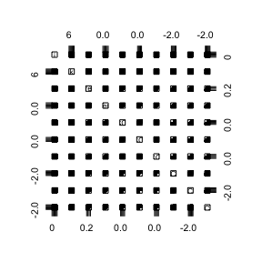
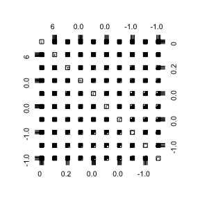
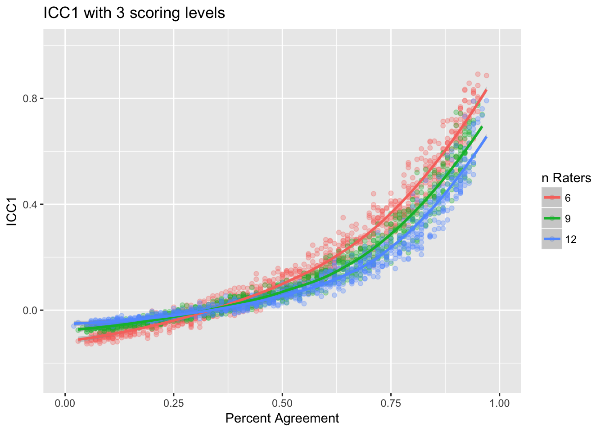
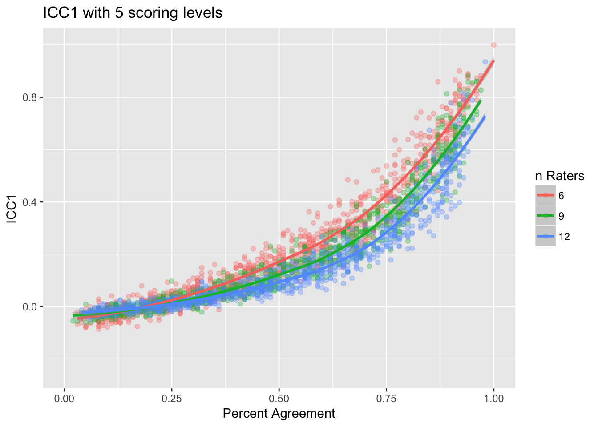
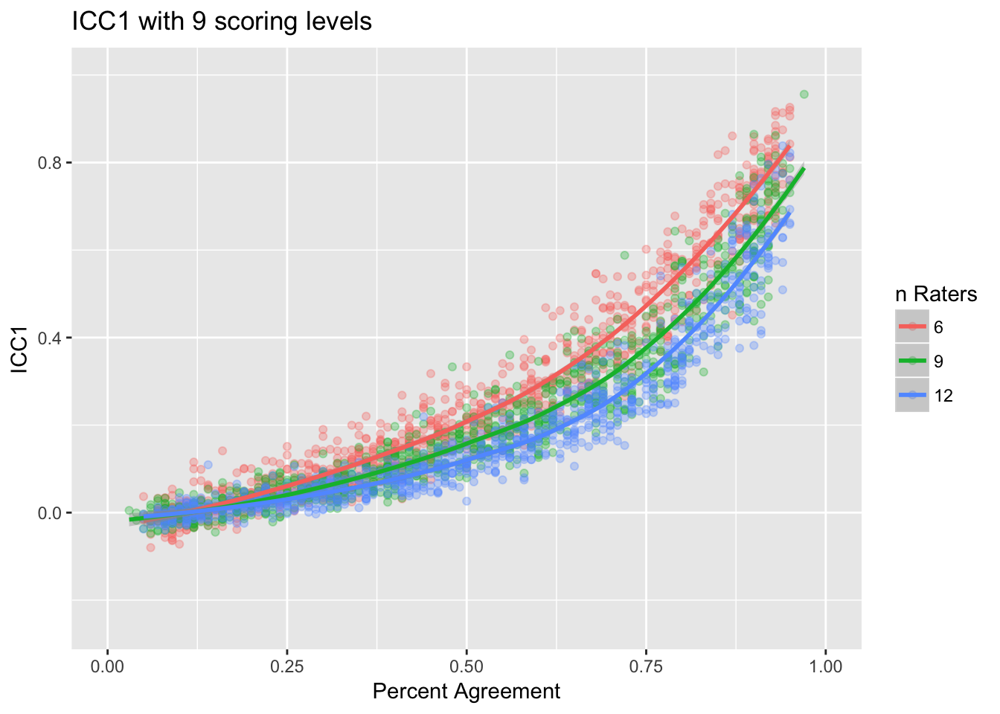
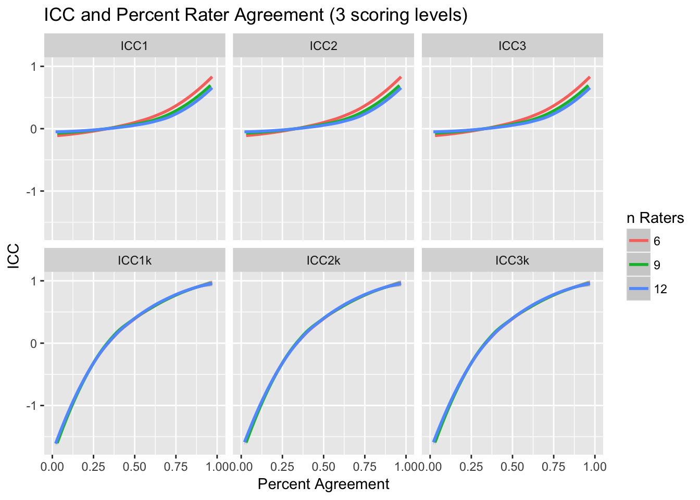

This document outlines a simulation to explore the relationship between percent rater agreement and six variations of interclass correlation (ICC). A number of functions are included in the irr_simulation.R script. To start, let’s look at the simulateRatingMatrix function. This function will generate a nEvents by k matrix. For each row, two columns (which represent raters) are randomly selected and each cell of those cells will randomly have a value between 1 and nLevels. The likelihood of those two cell having the same value is defined by the agree parameter.
test <- simulateRatingMatrix(nLevels = 3, k = 6, agree = 0.6, nEvents = 10)
test
#> a b c d e f
#> 1 NA NA 1 NA 3 NA
#> 2 NA 1 1 NA NA NA
#> 3 NA 2 NA NA NA 1
#> 4 1 NA NA NA NA 1
#> 5 NA 3 NA NA NA 1
#> 6 NA 1 NA NA NA 1
#> 7 1 NA 2 NA NA NA
#> 8 1 1 NA NA NA NA
#> 9 NA NA NA 3 NA 3
#> 10 NA NA 1 NA 1 NAThe agreement function will calculate the percent rater agreement for the matrix.
agreement(test)
#> [1] 0.6For the remainder of the document, we wish to estimate ICC for 6, 9, and 12 raters under the conditions of 3, 5, and 9 scoring levels.
tests.3levels <- simulateICC(nRaters = c(6, 9, 12), nLevels = 3)
tests.5levels <- simulateICC(nRaters = c(6, 9, 12), nLevels = 5)
tests.9levels <- simulateICC(nRaters = c(6, 9, 12), nLevels = 9)Here is a curious artifact of the relationship (you’ll see below that it is quadratic), the percent agreement is uniform (as it should be since we designed the simulation this way), the distribution of ICC1 is positively skewed.
ggplot(tests.3levels, aes(x = agreement)) + geom_density()
ggplot(tests.3levels, aes(x = ICC1)) + geom_density()
The following three figures show ICC1 against percent rater agreement with 3, 5, and 9 score levels, respectively.
ggplot(tests.3levels, aes(x = agreement, y = ICC1, color = factor(k))) +
geom_point(alpha = 0.3) +
geom_smooth(method = 'loess') +
scale_color_hue('n Raters') +
xlim(c(0,1)) + ylim(c(-0.25,1)) +
xlab('Percent Agreement') + ylab('ICC1') +
ggtitle('ICC1 with 3 scoring levels')
ggplot(tests.5levels, aes(x = agreement, y = ICC1, color = factor(k))) +
geom_point(alpha = 0.3) +
geom_smooth(method = 'loess') +
scale_color_hue('n Raters') +
xlim(c(0,1)) + ylim(c(-0.25,1)) +
xlab('Percent Agreement') + ylab('ICC1') +
ggtitle('ICC1 with 5 scoring levels')
ggplot(tests.9levels, aes(x = agreement, y = ICC1, color = factor(k))) +
geom_point(alpha = 0.3) +
geom_smooth(method = 'loess') +
scale_color_hue('n Raters') +
xlim(c(0,1)) + ylim(c(-0.25,1)) +
xlab('Percent Agreement') + ylab('ICC1') +
ggtitle('ICC1 with 9 scoring levels')
The figure below show the relationship between percent rater agreement and interclass correlation for the six types of ICC.
tmp <- melt(tests.3levels[,c('i','k','agreement','ICC1','ICC2','ICC3','ICC1k','ICC2k','ICC3k')],
id.vars = c('i','k','agreement'))
ggplot(tmp, aes(x = agreement, y = value, color = factor(k))) +
geom_smooth(method = 'loess') +
facet_wrap(~ variable) +
scale_color_hue('n Raters') +
xlim(c(0,1)) +
xlab('Percent Agreement') + ylab('ICC') +
ggtitle('ICC and Percent Rater Agreement (3 scoring levels)')
The literature suggests that ICC be used over percent agreement (citations?). However, the figures above suggest there is a strong relationship between percent rater agreement and ICC. Below, we fit a quadratic model predicting ICC1 from percent agreement. In all three cases the result \(R^2\) is greater than .89!
lm.out3 <- lm(ICC1 ~ I(agreement ^ 2), data = tests.3levels)
summary(lm.out3)
#>
#> Call:
#> lm(formula = ICC1 ~ I(agreement^2), data = tests.3levels)
#>
#> Residuals:
#> Min 1Q Median 3Q Max
#> -0.201414 -0.033691 0.003348 0.030766 0.306830
#>
#> Coefficients:
#> Estimate Std. Error t value Pr(>|t|)
#> (Intercept) -0.094769 0.001871 -50.65 <2e-16 ***
#> I(agreement^2) 0.752633 0.004489 167.65 <2e-16 ***
#> ---
#> Signif. codes: 0 '***' 0.001 '**' 0.01 '*' 0.05 '.' 0.1 ' ' 1
#>
#> Residual standard error: 0.06272 on 2698 degrees of freedom
#> Multiple R-squared: 0.9124, Adjusted R-squared: 0.9124
#> F-statistic: 2.811e+04 on 1 and 2698 DF, p-value: < 2.2e-16
lm.out5 <- lm(ICC1 ~ I(agreement ^ 2), data = tests.5levels)
summary(lm.out5)
#>
#> Call:
#> lm(formula = ICC1 ~ I(agreement^2), data = tests.5levels)
#>
#> Residuals:
#> Min 1Q Median 3Q Max
#> -0.24715 -0.03662 0.00506 0.03357 0.32815
#>
#> Coefficients:
#> Estimate Std. Error t value Pr(>|t|)
#> (Intercept) -0.049413 0.002102 -23.51 <2e-16 ***
#> I(agreement^2) 0.767413 0.005037 152.34 <2e-16 ***
#> ---
#> Signif. codes: 0 '***' 0.001 '**' 0.01 '*' 0.05 '.' 0.1 ' ' 1
#>
#> Residual standard error: 0.07047 on 2698 degrees of freedom
#> Multiple R-squared: 0.8959, Adjusted R-squared: 0.8958
#> F-statistic: 2.321e+04 on 1 and 2698 DF, p-value: < 2.2e-16
lm.out9 <- lm(ICC1 ~ I(agreement ^ 2), data = tests.9levels)
summary(lm.out9)
#>
#> Call:
#> lm(formula = ICC1 ~ I(agreement^2), data = tests.9levels)
#>
#> Residuals:
#> Min 1Q Median 3Q Max
#> -0.227100 -0.038989 0.002695 0.034725 0.295451
#>
#> Coefficients:
#> Estimate Std. Error t value Pr(>|t|)
#> (Intercept) -0.021036 0.002181 -9.646 <2e-16 ***
#> I(agreement^2) 0.774675 0.005238 147.892 <2e-16 ***
#> ---
#> Signif. codes: 0 '***' 0.001 '**' 0.01 '*' 0.05 '.' 0.1 ' ' 1
#>
#> Residual standard error: 0.073 on 2698 degrees of freedom
#> Multiple R-squared: 0.8902, Adjusted R-squared: 0.8902
#> F-statistic: 2.187e+04 on 1 and 2698 DF, p-value: < 2.2e-16